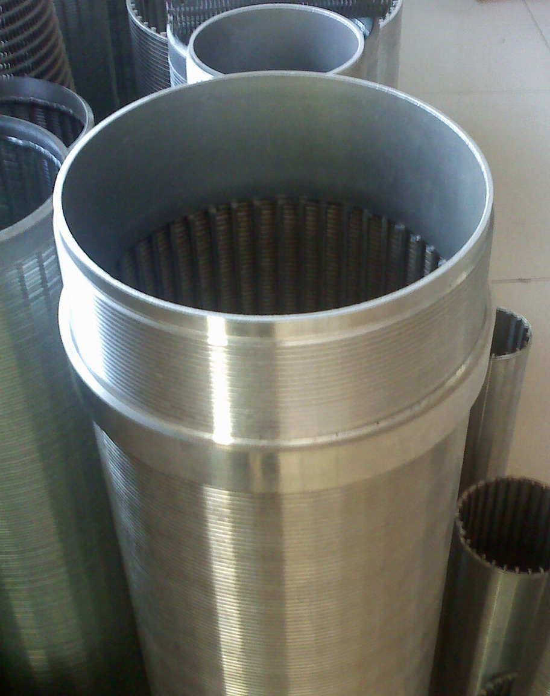
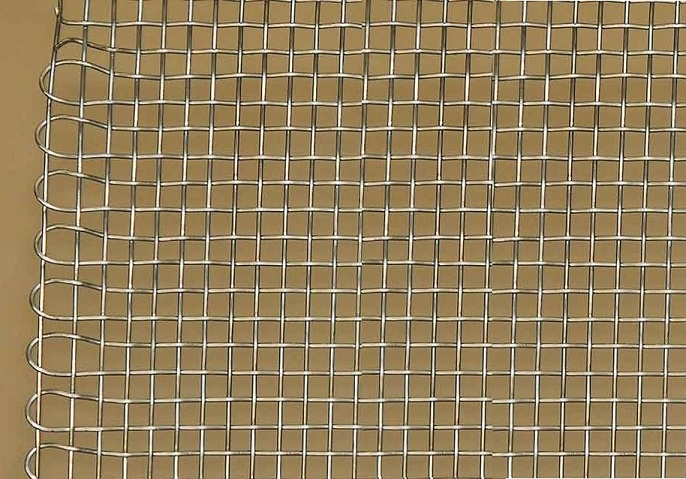
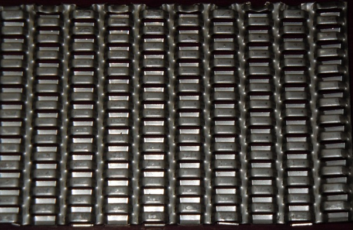

Perforation refers to the puncturing of a material with a harder (usually sharp) object to create a hole or aperture. Perforated Metal Sheets are custom made design of metal sheets. Holes (perforations) of various types & sizes are made to any metal sheet.
Metal Perforation is generally done by Die & Punch technique. Usually there are a number of punches and dies in a given set. The material is sheared by the sharp edges of the punch and die. The clearance (the measured distance between the outside circumference of the punch and the inner circumference of the die) are maintained to ensure a clean cut from the work piece. The punch is pressed through the material (either by machine or hand tool) and into the die removing a blank, resulting in a perforated work piece.

There are various types/ patterns in Perforation. The perforation generally used is the Round Holes & the Slot Holes. Other perforations are special design perforation and are made on demand as required. Further, there are numerous perforation used for Architectural in interior and exterior décor. We mainly produce perforation in Round Holes, Square or Rectangular Hole, Slot Holes in various sizes. For other perforations we have tie-ups with best supplier who can provide us these at best price and equivalent quality.
We are also having tie-up for high quality screen and special design perforation with one of the largest supplier of Perforated Plates. This association helps us in meeting the requirement for customers looking for high grade quality (including the high quality raw material) and can pay equivalent prices. These sheet ranges from normal to special design or to any ornamental perforation for decorative applications.


Since past two years, we have explored overseas markets for our products in Sugar Industry abroad and added few countries in our current portfolio wherein we had supplied our materials. We believe our products have that competitive edge and quality over supplies from other players and that our rates are highly competitive and our quality is standardized meeting the normal quality standards.
At Dinco Industries, we combine decades of craftsmanship with state-of-the-art technology to deliver unmatched industrial wire mesh and perforated screen solutions globally.
All kinds of Perforated and Wirenetting screens for any type of machines.
Batch Centrifugals are suitable for handling all white and raw sugar massecuites produced in the sugar industry. They are employed for separating crystalline solid / liquid mixtures.
Continuous Centrifugals are used wherever the centrifuged sugar has to be melted or magmatized or to be subsequently processed in the dry state.
Working Screen – Nickel Working Screens (for Continuous), Brass/ Copper Screen with or without lock-lap joint (for Batch)
Middle Screen – Round Hole Liners in Brass/ Copper, Stabbed Liners in Brass or SS, Brass/SS Wiremesh
Backing /Supporting – Dovex Type Wiremesh or Plain Wiremesh in SS/Brass (Continuous/ Batch), Wedge Wire Screens, High Quality Supporting screens- Tubular Bridge (Batch)
Nickel Screens– These are hard chrome plated sheets made from Nickel that is 99.99% pure. These screens are available from slot width 0.04MM to 0.12MM in thickness 0.25MM to 0.35MM. The hardness ranges from 900-1000 Hv. For more details please click
Nickel Working Screen
Nickel Working Screen
We supply Nickel Screens for all Centrifugal machine makes-
BMA- K850/30, K850/35, K1000/30, K1100/30, K1300/30, K2100/30, K2200/30, K2300/30, K3300/30
WESTERN STATES (WS)- CC4, CC5 (37″ X 30), CC6 (1100/30), CC8
BROADBENT- SPV 1220/30, SPV 1425/30, SPV 1100/25
FIVES CAIL- FC 1000/30, FC 1000/34,FC 1250/28, FC 1250/30, FC 1250/34, FC 1550/34, FC 1300/30 (SGFC)
HEIN LEHMANN (HL)- HL-8/30, HL-8/34, HL-9/34, HL-10/30, HL-10/34, HL-12/30, HL-12/34
BUCKAU WOLF (BW)- SC1100/30, SC 1100/34, SC1350/30
NHEC INDIA- NK 1100/30, NK 1300/30, NK1500/30, NK 1503/30
WIL INDIA- WK 1150/30, WK 1350/30, WK 1500/30, DC 10/34, DC 10/30, DC 1350/30
FCB-KCP- KCP 1000/30, KCP 1100/30, KCP 1100/34, KCP 1350/30, KCP 1350/34
KRUPP- SC 1100/30, SC 1100/34, KC 1100/30T, KC 1350/30T, KC 1500/30T
OTHERS- ZYU- OKK 1350, GUANGXI SU- LIT 1100, LIT 1400, XIANGTANG- IL 1000N, STG- STG 110HG, SWIDNICKA- ACWW 1000/34, SANGERHAUSEN- FKHO 1400C/30, FPI 1321-K-01/34, SALZGITTER- SMAG CC 900/34
These are used as working screen with lock-lap joints (Batch) and as middle screen liners (Continuous). These screens range from 0.5MM to 0.8MM hole dia in 0.50MM to 0.75MM thickness. Other sizes are available as per requirement. These screens are available as to be fitted to basket (Liners) for Continuous type and with lock-lap joints for Batch Type machines as required.
Centrifugal Screens-Round
Brass Liner
Lock-Lap Joints
Stabbed Liner
Brass/Copper/SS Screens & Liners (Conical Slot Hole)– These are screens that are normally available as Slot Hole (or Conical Slot) in size as 0.35MM X 4.00 MM in 0.35MM to 0.75MM thickness. Other sizes are available as per requirement. These are used frequently for batch type as working screens or for continuous type as middle screens/liners.
Centrifugal Screens-Slot
Centrifugal Screens-Slot
Middle & Backing Screens– SS or Brass Dovex screens are used in accordance with the basket size as a middle screen (Batch) and as a backing screen (Continuous & Batch). The screens are slightly different from normal wire-mesh. The normal sizes are in 2 to 8 Mesh. Plain Wire-mesh is also available (including in selvedges)
Further, there are high quality Tubular Bridge used as a backing screen (Batch) that enhances performance up to 40% and are durable. This screen gives about 30% more filtrate than the wire cloth and are lighter to handle, stronger and provide better filtering action. These are available in 1MM Thickness. The large clearance between the working screen and the basket ensures optimal flow of syrup/molasses.
Dovex Screen
Brass Screen
Tubular Screen
Cross-Slot Screen
These are used to de-sweeten and dewater the mud that is separated from the juice in the clarifier. Rotary screens allow for large flows to be pumped over the screen inside, which separates the liquids and the solids as the system rotates.
*• Rotary Drum*Rotary Drums/ Dorr Oliver/ Mud Filter Drums are normally available in various sizes as 8’X12’ or 8’X16’ or 10’X16’ or 14’X30’ or 16’X36’. Further there are various other sizes available depending on the required filter area. The vacuum filter screens are installed to these drum as 2 or 3 or 4 pcs per face or length of drum.
The size primarily used- Hole Dia-0.51MM in 0.30MM- 0.40MM Thickness with 625 Mesh per sq.inch giving an open area of 19.60% (approx). We supply screens for all sizes and specification as per the requirement.We supply screens for all sizes and specification as per the requirement.
Vacuum Filter Screen
Vacuum Filter Screen
These are specially designed equipment for coarse separations that operates accordingly at high capacity, free from blockage. It is a screening machine which is distinguished from others in that the screen meshes are vibrated directly by means of raping bars. The screen mats are tensioned in the direction of material flow over the rapping units. Screen cloth is securely clamped and side-tensioned over rubber capped and cambered deck. Spring loaded tension bolts assure tensioning of fine mesh cloths.
Vibrating Screens – Wiremesh screens also fitted with side rubber strips and SS clamps. Various mesh’s are used and normally ranges from 4 Mesh to 60 Mesh (also available with Selvedges). Vibrating screens are used for fast, accurate sizing of light or fine material
Mogensen Grader
Vibrating Grader
Vibrating Screens
Selvedge type
These Screens are available in Bar/ Opening size (Slot) from 0.20MM to 2.00MM) and are offered in Drum Dia of 800MM upto 2500MM with lengths from 1000MM to 9000MM [assembled]. These are available in Welded type. These are also know widely as Juice screens are used in place of DSM for a wider and efficient Juice output. A Rotary Juice has a greater screening capacity than a Sieve Bend or Flat screen due to circular forces exerted as material flows against the curved surface. This curved profile wire screen is mounted in a frame with the screen openings perpendicular to the flow. In a typical feed situation, the leading edge of the wedge wire removes the water and the fine particles through the screen up to cut point size, as the oversized particles move across the top of the screen. Separation size is considerably smaller than screen openings, usually about one-half the opening size. Rotary screens are ideal for sizing and dewatering applications in liquid/solid separation situations for a bigger capacity.
Screens- Rotary Welded Screens made of Heavy SS 304 wire bend at normal 30/45/60/90 degree or any other angle with Slit opening or Bar spacing from 0.20MM to 2.00MM (Higher or lower on request) with screen segment sectors width from 500MM to 3000MM. These are also supplied fitted with Circular End Rings and Axial Flanges as end bars [with or without holes], Vertical and Horizontal Stiffeners for the screen structure support, Ribs welded between the circular end rings to the screen ends in Welded type
Rotary Screen Sector Segment
Rotary Screen Assembled Segments
Rotary Screen Unit
Rotary Juice Screen fitted with Assembly
Rotary Juice Unit 3D
A Sieve bend has a greater screening capacity than a flat screen due to forces exerted as material flows against the curved surface. This curved profile wire screen is mounted in a frame with the screen openings perpendicular to the flow. In a typical feed situation, the leading edge of the wedge wire removes the water and the fine particles through the screen up to cut point size, as the oversized particles move across the top of the screen. Separation size is considerably smaller than screen openings, usually about one-half the opening size. Sieve bend screens are ideal for sizing and dewatering applications in liquid/solid separation situations.
Screens- Sieve bend made of Heavy SS 304 wire bend at normal 30/45/60/90 degree or any other angle with Slit opening or Bar spacing from 0.30MM to 2.00MM. (Higher or lower on request) with width from 500MM to 3000MM (including section bars as per request) in Looped or Welded type
Looped Type DSM
Looped Type Screen
Welded Type DSM
DSM Screen Bend
Sieve Bend Screen Machine
These screens are available in Bar size (Slot) from 0.25MM to 2.25MM) and are offered in Drum Dia of 4″ to 48″ with lengths from 24″ to 120″. These are available in Looped type as well as Welded type. These are also know widely as Water-well screens.
Rotary Screens
Rotary Drum Screens
These screens are Heavy type Perforated Screens used for diffuser decking and wash tables. These are mainly made in Mild Steel/ Stainless Steel in Thickness from 2MM to 12MM with Round hole dia. from 6MM to 15MM upto a maximum width of 60′.
Diffuser Plates
Diffuser Plates
These screens are Lipped type Slotted screens mainly used for de-watering and de-sanding of baggasse or molasses. These are mainly made in Mild/ Carbon Steel in thickness from 1MM to 2MM upto maximum width of 60″. The standard size of 3.25MM X 15MM is available and other sizes are available on request.
Lipped Slot
Flanged Lipped
These screens are Perforated Screens or Wedge Screens mainly used for the separation of sugar juice from cane fiber. These are mainly made in Stainless Steel.
Cush-Cush Screens